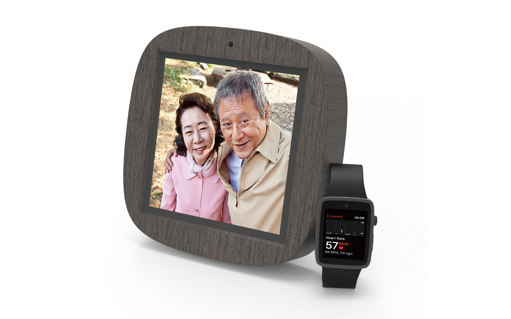
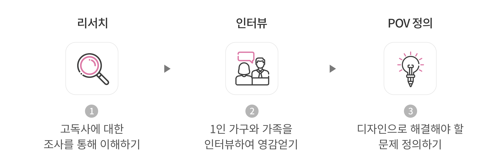
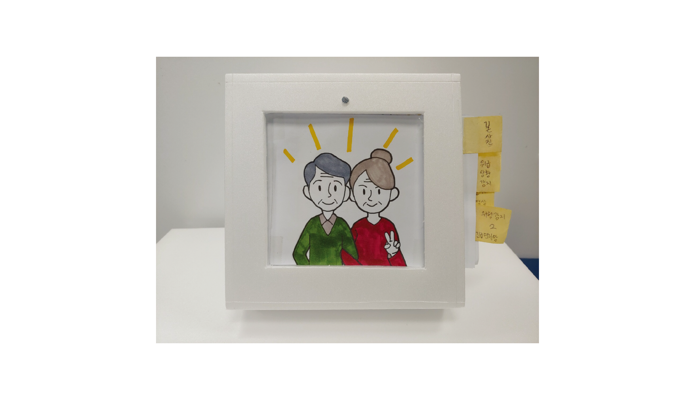
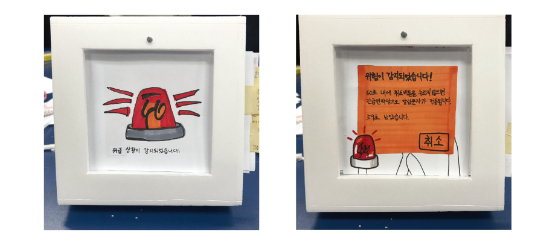
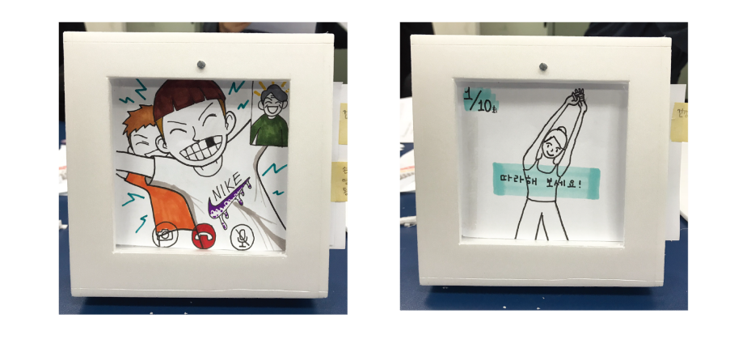

관찰을 통해 고독사를 예방하고
신속한 신고와 대처가 가능한 스마트한 제품이 필요하다
Problem
곁에 아무도없어 사고발생시 대처가 어려움
- 나이와 상관없이 1인 가구의 수 증가
- 고독사는 예방이 어렵고 어떠한 돌발상황이 일어날지 예측이 불가능함
Challenge
신속한 신고와 대처가 가능한 서비스와 제품
- 차갑고 정적인 제품이 아닌 교감과 대화가 가능한 디바이스
- 혼자 있는 시간에도 외로움을 느끼지 않도록 함
디자인 씽킹의 단계에 따라
문제점을 바탕으로 서비스를 기획했습니다
Research
3가지 단계를 통해 프로젝트의 기획방향 설정

Idea Define
교감
차가운 제품보다는 누군가와의 교감이 필요하다
대면
얼굴을 맞대고 하는 대화가 필요하다
외로움
혼자 있는 시간에도 외로움을 느끼지 않게 해야한다
연락
연락은 기본적인 소통 방식이다
POV Define
노인은 직접적인 교류감을 필요로 하기 때문에 얼굴을 맞대고 소통할 수단이 필요하다
노인은 외로움이 건강에 영향을 미치기 때문에 외로움을 느끼지 않도록 해야한다
모든 사람은 항상 같이 있지 않아서 연락이라는 수단이 필요하다
Frand & Frand Watch
Frame + Friend의 합성어로, 액자형태의 외관형태와 AI가 사용자의 친구가 되어준다는 의미를 담고 있다. 평상시에는 액사로 자신이 원하는 사진을 설정하여 볼 수 있지만 필요시에 카메라를 통해 다른 사람과 영상통화를 할 수 있는 디스플레이로 활용이 가능하다. 사용자가 인식하지 않아도 센서가 사용자를 관찰하고 데이터를 기록한다. 사용자마다 이 서비스를 사용하기 전, 간단한 문답과 건강에 대해 입력 시켜놓으면 사용자에 맞는 개인화 시스템이 적용된다. 따라서 사용자마다 건강관리를 설정할 수 있다. 기기의 테두리 부분은 스피커로 알람음이나 영상통화시에 사용할 수 있도록 되어있다.
Mock up

사용자 설정 사진

위급상황 발생
위급상황 오류

손자와 영상통화
1:1 건강관리